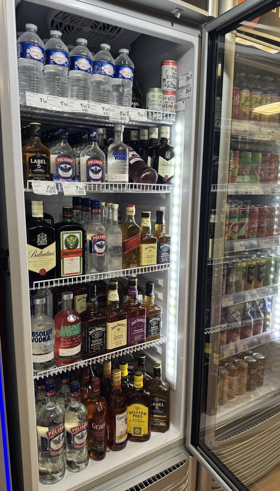

Alimentation générale
Produits en conserve, charcuteries, fromages, gâteaux apéritifs, confitures, biscuits sucrés ou encore tablettes de chocolat, vous trouverez différents produits d'alimentation générale dans notre magasin de proximité.
Proxi Dombasle
Livraison dans un rayon de 20 km
Lundi, Mardi, Mercredi, Jeudi de 10h à 14h et de 17h à 00h Vendredi, Samedi, Dimanche de 10h à 2h00

Présentation
Installé à Dombasle-sur-Meurthe, dans le département de la Meurthe-et-Moselle, en région Grand Est, notre épicerie de quartier est ouverte le week-end, toute la journée sans interruption. Dans un cadre propre et dans une ambiance chaleureuse, vous trouverez des produits d'alimentation générale et des boissons.
Contactez-nousServices
Ouverte le week-end, notre épicerie de quartier vous propose des produits d'alimentation générale, ainsi que des alcools et des softs. Nous pouvons vous livrer dans un rayon de 20 kilomètres.
Produits en conserve, charcuteries, fromages, gâteaux apéritifs, confitures, biscuits sucrés ou encore tablettes de chocolat, vous trouverez différents produits d'alimentation générale dans notre magasin de proximité.
Ouvert le week-end, notre commerce à Dombasle-sur-Meurthe vend des produits frais et des produits surgelés. Vous trouverez notamment des fruits et légumes frais, ainsi que des plats cuisinés, des pizzas et des glaces.
Soda, eau pétillante, bière, vin, whisky, vodka, rhum ou champagne, notre épicerie vous propose des boissons alcoolisées et des boissons non alcoolisées.
Possibilité de livraison à domicile à Dombasle-sur-Meurthe et dans un rayon de 20 kilomètres. Contactez-nous pour en savoir plus.
Proxi Dombasle est votre épicerie de proximité à Dombasle-sur-Meurthe : alimentation générale, livraison de courses et produits du quotidien, y compris le dimanche, quand les autres commerces sont fermés.
Avis clients
« Super épicerie de proximité, toujours pratique quand on a besoin de quelque chose rapidement. Accueil très sympa et magasin bien tenu, je recommande !»
« Très bonne épicerie, avec pas mal de choix et des horaires vraiment pratiques. Le personnel est agréable et toujours bien accueilli. Je reviendrai sans hésiter. »
« Très bon commerce de proximité ! Le gérant est accueillant, les produits sont variés et le service est rapide. Une bonne adresse à Dombasle-sur-Meurthe. »
Contact
La façon la plus rapide de nous joindre : un appel. Nous répondons du lundi au dimanche, aux horaires d'ouverture du magasin.
{kind=link}
{kind=link}
{kind=link}
{kind=link}
{kind=link}
{kind=link}
{kind=link}
{kind=link}
{kind=link}
{kind=link}
{kind=link}
{kind=link}
{kind=link}
{kind=link}
{kind=link}
{kind=link}